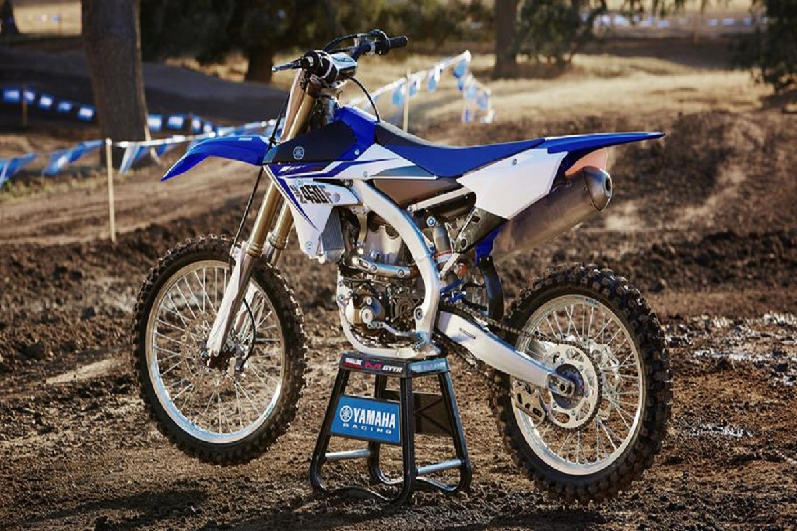
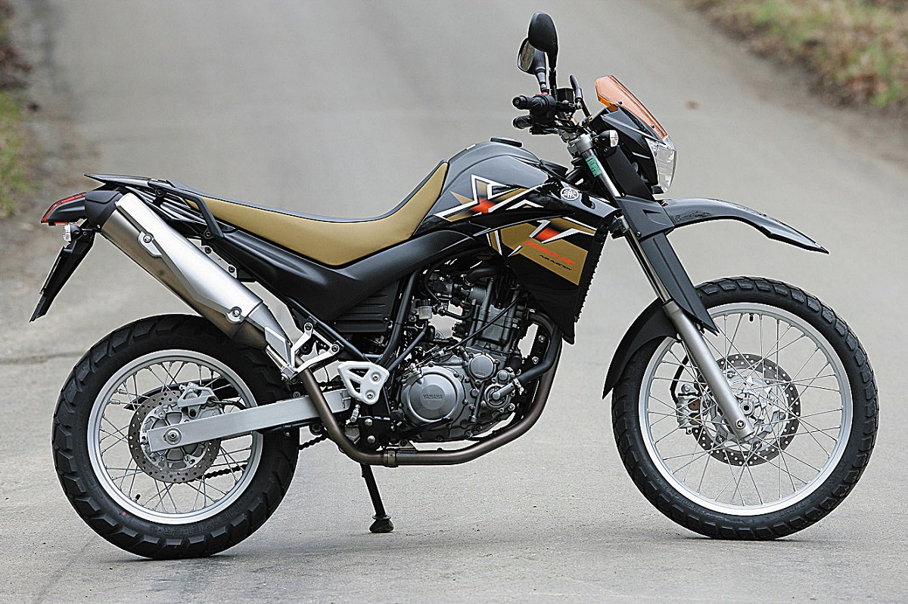
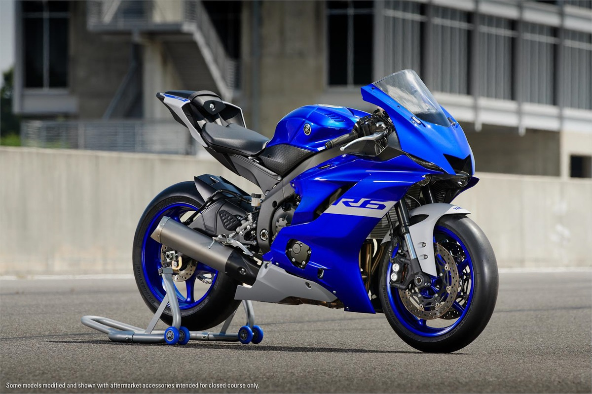

Concesionario Yamaha
YZ 125

La nueva YZ125 es la motocicleta de motocross de 125 cc más rápida, ágil y ligera de la historia de
Yamaha. Este modelo de dos tiempos tiene un diseño completamente nuevo para ofrecerte una potencia mayor
y más aprovechable que nunca. Su chasis ultra estilizado está equipado con un potente equipo de frenos y
unas refinadas suspensiones que te garantizan todo el rendimiento que necesitas para subir al podio..
YZ 65

una moto de verdad para los pequeños pilotos. A imagen y semejanza con las monturas más potentes de la
marca japonesa, la YZ65 cuenta con un chasis de cuna semidoble de acero y un subchasis de aluminio que
ofrecen una conducción muy ágil y estable, ademá de resultar muy ligeros. La horquilla invertida tiene
barras de 36 y está fabricada por KYB, mientras que el basculante es de aluminio al que va anclado el
monoamortiguador directamente -sin bieletas
YZ450

Esta nueva edición incorpora un novedoso control de tracción para una mejor salida en pista, un freno
delantero de 270 mm para mayor seguridad y control en las curvas. Todo esto Segoetitlsumado al conocido y
confiable motor monocilíndrico de inyección con desplazamiento hacia atrás, que la hace de más potencia
y menos peso. El chasis compacto y su diseño más agresivo la convierten en una máquina potente para los
terrenos más desafiantes.
mt 09

Esta nueva edición incorpora un novedoso control de tracción para una mejor salida en pista, un freno
delantero de 270 mm para mayor seguridad y control en las curvas. Todo esto sumado al conocido y
confiable motor monocilíndrico de inyección con desplazamiento hacia atrás, que la hace de más
potencia y menos peso. El chasis compacto y su diseño más agresivo la convierten en una máquina
potente para los terrenos más desafiantes.
xt 660

as características de esta moto, decirte que tiene una cilindrada de 660.00 cc y una potencia total
de 47.34 cv (34.6 kw) a 6000 rpm en un motor monocilíndrico, 4 tiempos con arranque arranque
eléctrico.
R6

Esta moto pertenece a la categoría de deportiva y el primer modelo de ésta generación de las Yamaha
yzf se lanzó al mercado en el año 1993, por lo que hablamos de una generación de motos que tiene ya
29 años.